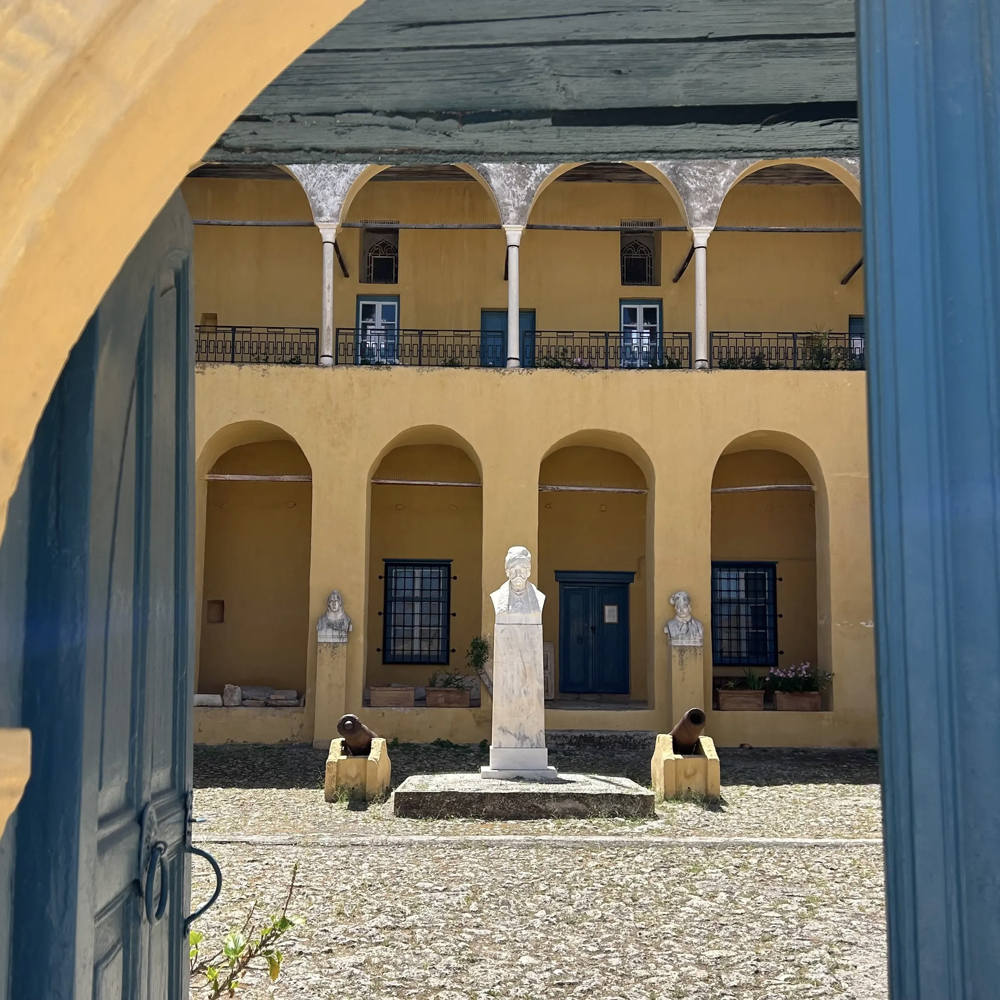

Spetses
Legacy of Laskarina Bouboulina and Naval Bravery.

Legacy of Laskarina Bouboulina and Naval Bravery.
3-4 hours
Private Tour
Custom pick-up point



Begin your day with a scenic ferry ride from the harbor of Piraeus, gliding over the sparkling Saronic Gulf to reach the island of Spetses. The car-free harbor immediately sets the tone: elegant, serene, and steeped in history.
Your first stop is Dapia, the central port and social heart of the island. Lined with cafés and boutique shops housed in 19th-century buildings, it offers sweeping sea views and a stylish introduction to the island. Stroll along the promenade, where historic cannons stand in silent tribute to Spetses’ role in the Greek War of Independence.
Our tour begins with a visit to the Bouboulina Museum, located in the 300-year-old mansion of the legendary heroine. Her fascinating story as a naval commander during the Greek War of Independence stands as a remarkable example of bravery and self-sacrifice.
Next, we’ll visit the House of Hatzigiannis Mexis, another historic mansion now functioning as a National Historical Museum. Through its collection of manuscripts, weapons, and ship models, you'll gain insight into life on the island during the 19th century.
We then continue to the Monastery of Agios Nikolaos, the spiritual heart of Spetses and the site where the revolutionary flag was first raised in 1821.
After our visits, enjoy a leisurely lunch at one of the waterfront tavernas in the old harbor area of Palio Limani, where traditional wooden kaikia (fishing boats) bob beside sleek modern yachts.
We will conclude our day with a walk around the lighthouse of the old port, where you can admire the park of bronze statues created by contemporary artist Natalia Mela.
Step into a world without cars, where donkeys and footpaths lead you through cobbled lanes, and sea captains’ mansions whisper tales of revolution and refinement. Spetses offers a full-day escape filled with understated elegance, maritime heritage, and artistic charm—all set against the deep blue of the Aegean.
Begin your day with a scenic ferry ride from Piraeus, gliding over the sparkling Saronic Gulf.
Arrive at the central port of Spetses, lined with cafés, boutique shops, and historic cannons.
Visit the mansion of Laskarina Bouboulina, a naval commander during the Greek War of Independence.
Explore this historic mansion, now a National Historical Museum showcasing Spetses' rich heritage.
Visit the spiritual heart of Spetses, where the revolutionary flag was first raised in 1821.
Enjoy a leisurely lunch at a waterfront taverna, surrounded by traditional fishing boats and modern yachts.
Conclude your tour with a walk around the lighthouse, admiring bronze statues by Natalia Mela.
Entrance fees to venues
Private licensed guide
If you have any questions or would like to book this tour, feel free to reach out:
Email: greecelocalguide@gmail.com
Phone: +30 6942919085